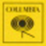

PHARREL WILLIAMS
HAPPY
| FROM DESPICABLE ME 2 |
| FROM DESPICABLE ME 2 |
HAPPY
WRITTEN BY PHARRELL WILLIAMS
PUBLISHED BY EMI APRIL MUSIC, INC. OBO ITSELF AND MORE WATERFROM NAZARETH (ASCAP) / UNIVERSAL PICTURES MUSIC (ASCAP) | BACKGROUND VOCALS PERFORMED BY RHEA DUMMETT, TREVON HENDERSON, ASHLEY L. LEE, SHAMIKA HIGHTOWER, JASMINE MURRAY AND TERRENCE ROLLE | PRODUCED BY PHARRELL WILLIAMS | RECORDED BY MIKE LARSON FOR I AM OTHER ENTERTAINMENT AT CIRCLE HOUSE STUDIOS, MIAMI, FL | ASSISTED BY MATTHEW DESRAMEAUX | DIGITAL EDITING AND ARRANGEMENT BY ANDREW COLEMAN AND MIKE LARSON FOR I AM OTHER ENTERTAINMENT | MIXED BY LESLIE BRATHWAITE AT MUSIC BOX STUDIOS, ATLANTA, GA.
PHARRELLWILLIAMS.COM  COLUMBIARECORDS.COM